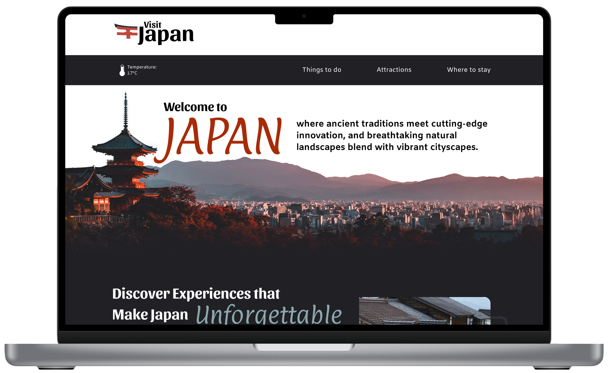
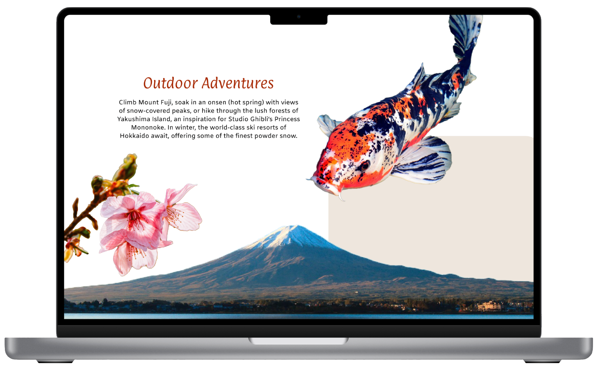
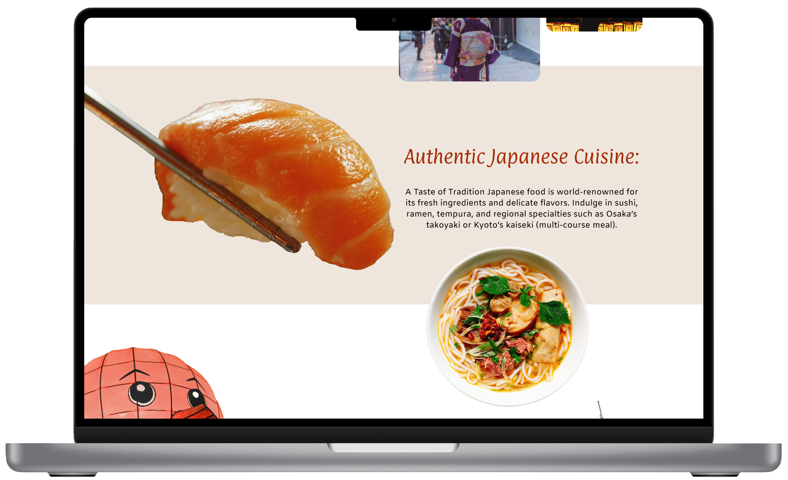
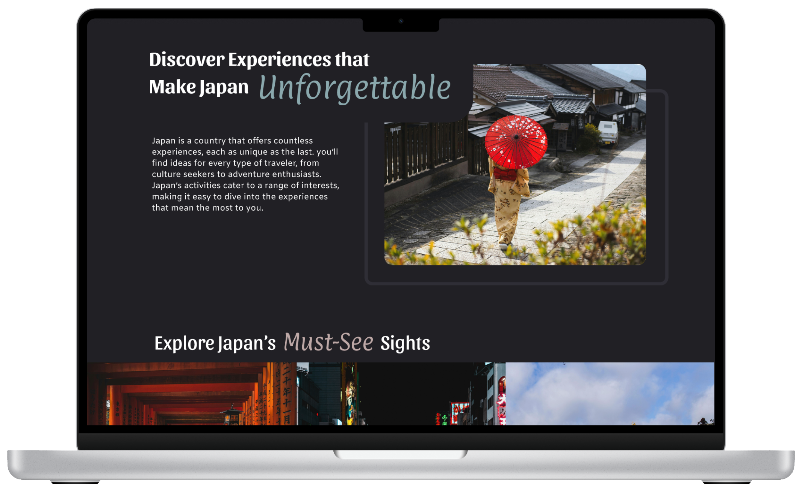
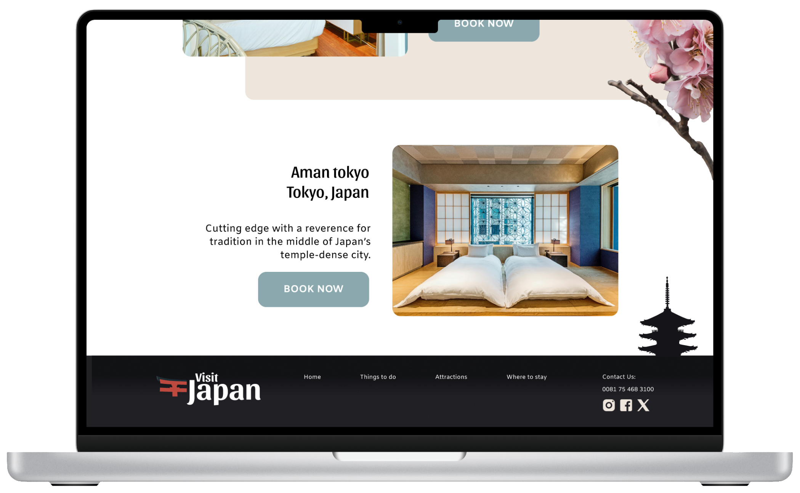

UI/UX DESIGN · PROTOTYPE
An immersive tourism website concept designed to showcase Japan's cultural landmarks, unique experiences, and beautiful landscapes.

01 / DESIGN SHOWCASE
I created this website using Figma to showcase Japan's culture, landscapes, and food. By combining elements from Japanese style with modern styles, I wanted to encourage people to learn more about Japan and plan a visit of their own.




02/ Explore the Project
Explore the interactive prototype and discover Japan's destinations, culture, and experiences.